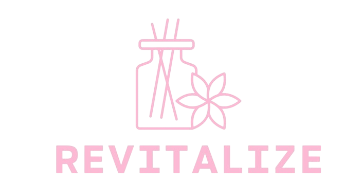

Questionário sobre o Tipo de Pele
Questionário sobre o Tipo de Pele
1. Como é que sentes a tua pele algumas horas depois de a lavar?
Oleosa
Seca
Equilibrada/Normal
2. Como é que sentes a tua pele depois de usares um gel de limpeza facial?
Seca/Demasiado apertada
Seca
Confortável
3. Com que frequência tens manchas secas ou escamosas na tua pele?
Raramente ou Nunca
Ocasionalmente
Com Frequência
4. Como reage a tua pele a cremes hidratantes?
Fica oleosa ou brilhante rapidamente
Fica hidratada e confortável
Não absorve facilmente o creme hidratante, fica seca após a aplicação
5. Como reage a tua pele às mudanças de clima?
Torna-se mais oleosa
Torna-se mais seca
Não apresenta mudanças significativas
6. Costumas sentir alguma sensação de aperto ou desconforto depois de limpares o rosto?
Sim, frequentemente
Ocasionalmente
Raramente ou nunca